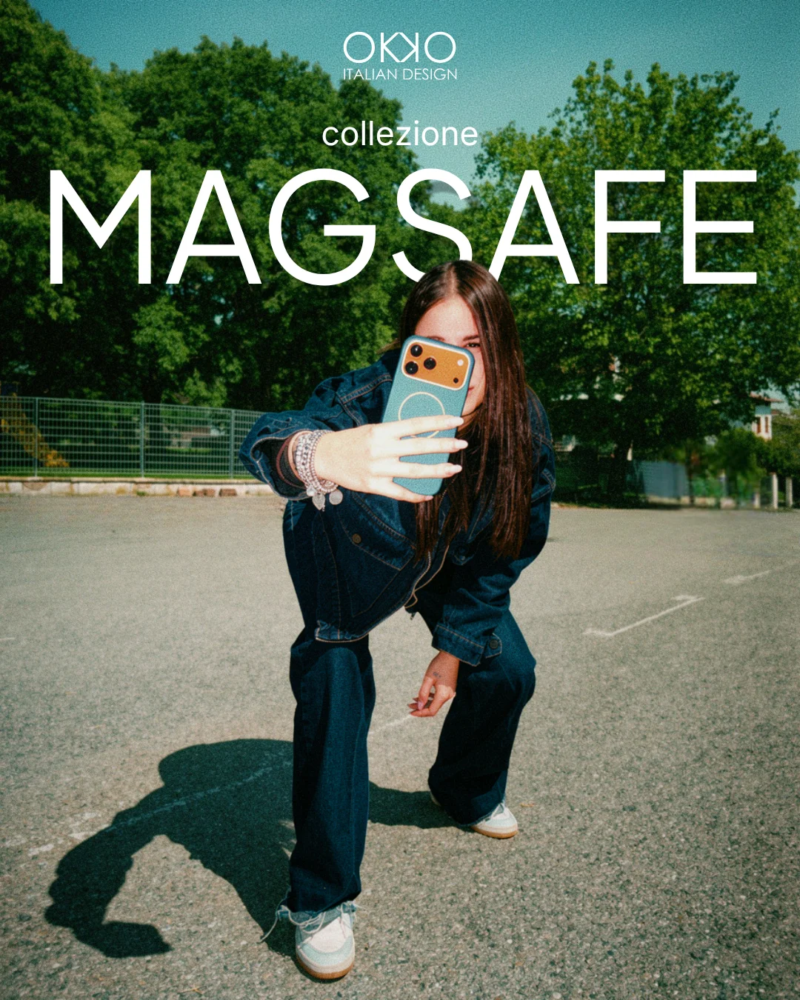

Due registri visivi — quale uso quando
| Registro | Quando | Produzione | Look |
|---|---|---|---|
| A — Studio avorio puro | Scatti-prodotto, ads di conversione, catalogo, post di prodotto | AI (ad-image-factory) o foto studio | Prodotto su avorio uniforme, pulito, premium |
| B — Lifestyle editoriale | Campagne di engagement/awareness, social, brand-building | Foto reale / shooting (no AI sulle persone) | Persona reale, location vera, pellicola 35mm, tipografia gigante |
Regola anti-deriva: dentro un set o una campagna non si mescolano i due registri. Si sceglie A oppure B e si tiene fino in fondo.
Registro A — Studio avorio puro (prodotto)
Prodotto reale al centro, sfondo studio avorio uniforme, luce morbida diffusa, una sola ombra di contatto corta, ampio respiro. Look catalogo premium, minimale, «boutique italiana». Niente scene, niente lifestyle, niente colore di sfondo.
Cosa resta fisso, cosa varia
- Fisso: sfondo avorio, luce morbida, ombra di contatto, composizione, camera, color grade.
- Varia: il prodotto (foto reale) e il suo colore, il copy/overlay (gestito dal template, non dall'AI).
Specifiche
- Sfondo studio seamless avorio
#FAFAF7(o bianco per cut-out), uniforme — mai sfondi colorati o scene. - Negative space generoso; luce morbida diffusa; una sola ombra di contatto corta e morbida.
- Un solo soggetto eroe, centrato, intero e a fuoco; camera ~50mm a livello occhio.
- Color grade caldo-neutro, ambiente desaturato: l'accento arriva dal prodotto. Finitura opaca e flat (niente gradienti).
Prompt bloccati (operativi in ad-image-factory)
Base prompt:
Editorial e-commerce product photography for OKKO Design. Replace the background with a
clean, seamless, uniform soft ivory (#FAFAF7) studio backdrop with generous empty negative
space around the product. Keep the product exactly as it is. Soft, even, diffused daylight;
one single short, subtle contact shadow beneath the product; no hard shadows, no reflections.
Matte, warm-neutral, low-saturation environment. Calm, premium, minimal Italian boutique mood.
Product centered, eye-level, fully sharp.Negative prompt:
text, logos, watermarks, hands, people, faces, clutter, props, lifestyle scene, busy
background, gradient, colored or vivid background, hard shadows, glossy reflections,
duplicated or distorted product, frames, bordersRegistro B — Lifestyle editoriale (campagne)
Reference canonica: campagna MAGSAFE per Meta (engagement), realizzata dalla grafica interna OKKO — maggio 2026.

Identità in una frase
Persona reale, giovane e autentica, in una location quotidiana italiana (campetto, asfalto, strada), che usa o mostra il prodotto; resa pellicola 35mm (grana, toni leggermente vintage), tipografia bianca gigante sopra la foto. Energico, vero, «scroll-stopping».
Attributi coerenti su tutta la campagna
- Soggetto: persona reale (no stock, no AI), posa dinamica, prodotto eroe e ben visibile (cover/MagSafe in uso).
- Location: reale e quotidiana (esterni italiani), non studio.
- Luce: naturale, anche sole diretto con ombre vere (qui il contrasto duro è ammesso — l'opposto del Registro A).
- Color grade: look pellicola 35mm (grana, ombre leggermente teal, mezzitoni caldi, resa un filo vintage). È ciò che tiene insieme la campagna: stesso grade su tutti gli scatti.
- Styling: casual contemporaneo e reale. Mood: autentico, giovane, energico.
- Il colore brand arriva dal prodotto (cover teal, accenti coral), non da filtri o sfondi artificiali.
Tipografia & layout (sopra la foto)
- Logo OKKO + Italian Design in alto al centro, bianco, piccolo.
- Eyebrow lowercase (es. collezione), bianco, centrato.
- Parola eroe (nome collezione/prodotto) in maiuscolo, bold, gigante, bianca, a tutta larghezza, sovrapposta in alto al soggetto.
- Tutto il testo bianco sopra foto a tutto campo (full-bleed), niente bordi. Formato base 4:5, declinabile 9:16.
Produzione
- È un vero shooting (modella + location reale): non usare l'AI per generare le persone (rischio «persone fake» / AI slop, vietato dal brand).
- L'AI può al massimo supportare il post (grade coerente, pulizia), non sostituire lo scatto.
Integra l'atmosfera visiva: il divieto di persone/lifestyle vale per catalogo e contesti istituzionali (Registro A). Le campagne social/adv usano il Registro B.